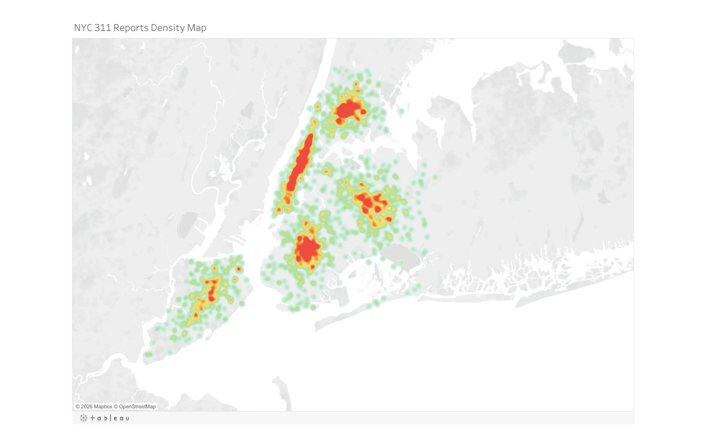
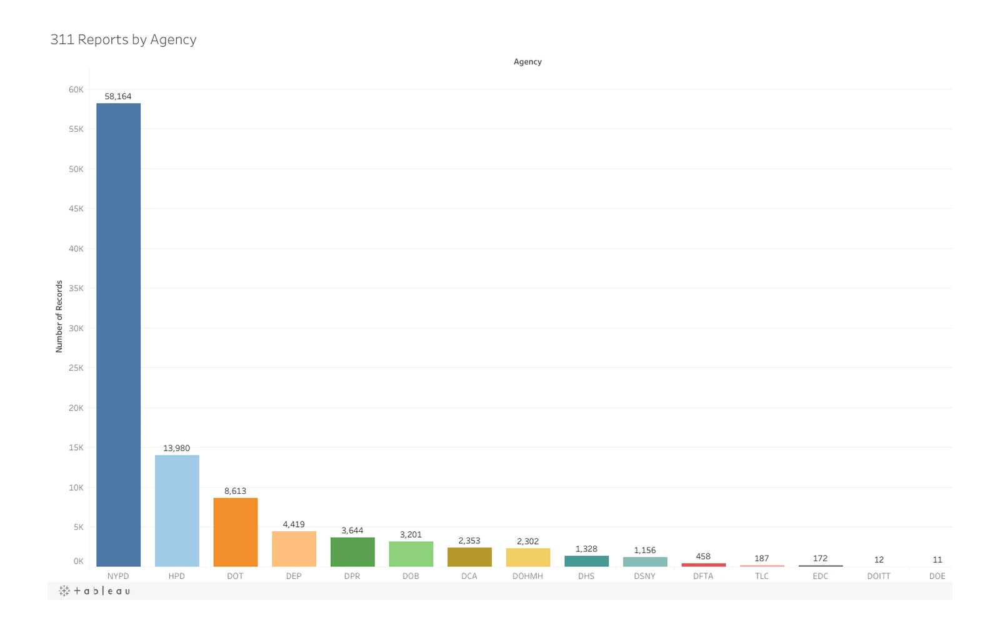

Date
Day · Month · Quarter · Year
Data engineering & visualization
From 100,000 public service records to an analytical system built for exploration.
I acquired NYC Open Data through the Socrata API, designed and loaded a dimensional warehouse, and built an interactive Tableau experience for exploring service-request patterns across the five boroughs.

End-to-end system
The visualizations sit on top of a complete analytical pipeline. Each stage was designed to turn a large public dataset into consistent, queryable information while preserving the dimensions needed to compare place, time, issue type, and responsible agency.
Retrieve a 100,000-record snapshot from NYC Open Data using Python and the Socrata API.
Define a complaint fact table connected to date, agency, location, and complaint-type dimensions.
Clean, select, sort, deduplicate, enrich, and load the data through Pentaho ETL workflows.
Connect Tableau to the warehouse and turn the modeled data into interactive analytical views.
Dimensional architecture
A central complaint fact table links the source record to four reusable dimensions. Surrogate keys and lookup steps keep the structure consistent as raw rows move into the warehouse.
Day · Month · Quarter · Year
Agency code · Agency name
Unique request key with relationships to every analytical dimension.
Latitude · Longitude · Borough
Category · Descriptor
Visual analysis
The overview combines rank, distribution, proportion, and geography so a broad pattern can be followed into a more focused question.


Technical execution
The project connects data acquisition, dimensional modeling, production-style ETL, and visual analysis into a single system.
Acquisition
API retrieval and tabular preparation with Python and Pandas.
Warehouse
Fact-and-dimension schema, surrogate keys, indexes, and relational constraints.
Transformation
Repeatable pipelines for selection, typing, deduplication, enrichment, lookups, and loading.
Visualization
Interactive charts, maps, filters, and borough-specific views built on modeled data.
Explore the finished system
Open the interactive Tableau workbook to filter the dashboard and move between focused analytical views.
Open live dashboard ↗